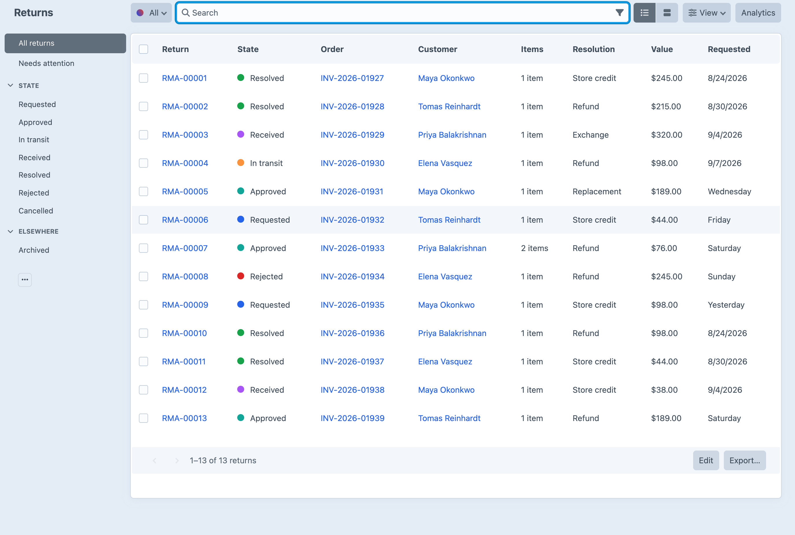
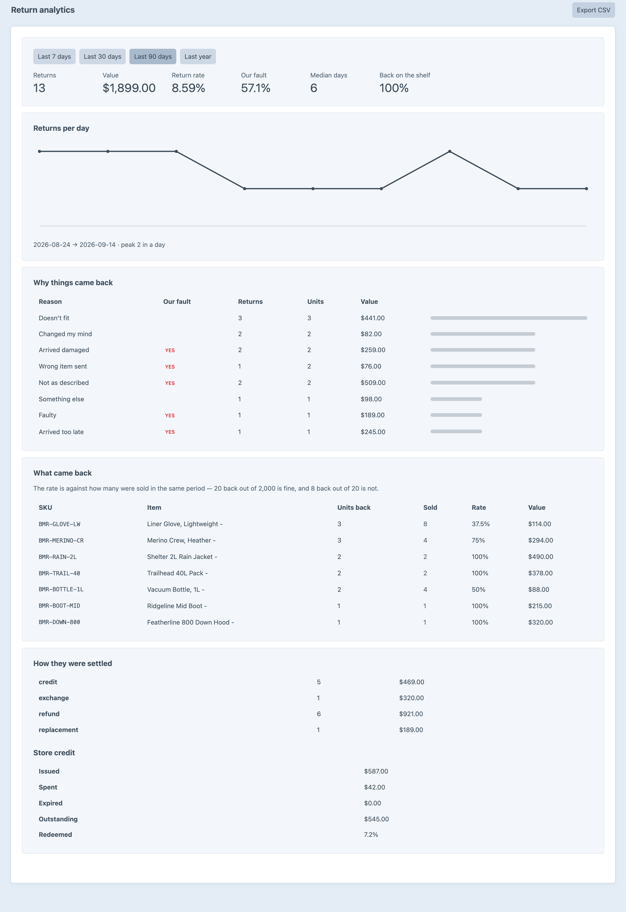

Returns that come back.
Returns, RMAs, restocking and a store-credit wallet that spends like a real payment method.
Core can refund a payment. It has no request, no approval, no receipt, no restock, no exchange and no credit. Boomerang is the loop around the refund.
A returns portal at /returns, working on the first day you install it.
The plugin reads each state's kind, not its label.
A payment method, not a discount that lies about the subtotal.
What the customer gets back, and where the stock goes while they get it.
The desk's whole week, in commands that fail loudly.
What came back, what it was worth, and every hand it passed through.

A return rate that mixes the two tells you nothing.
